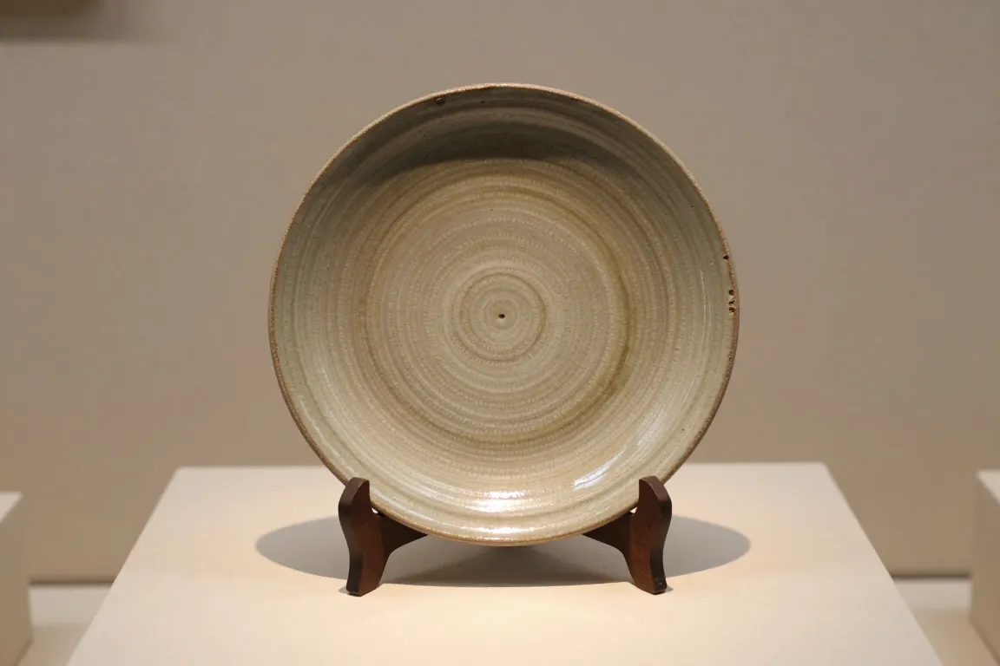

ceramics · 2005–present · also: Restaurant ceramics, New Nordic stoneware, Hand-thrown plates for chefs
Hand-made stoneware plates and bowls that a studio potter makes with a chef for one restaurant. The pieces have an uneven rim, a matt or earth-toned glaze and a bare clay foot, and they frame the food like a landscape.

Core thesis
A chef and a potter design the plate with the dish: a matt, earthy and slightly uneven vessel gives the food a ground that no factory plate can give.
Design principles
Throw each piece by hand on the wheel, and leave a trace of the throwing rings.
Make the rim a little uneven, and the well wide, so that the food sits like a landscape.
Glaze in a matt or ash glaze in an earth colour: stone, moss, rust, bone or charcoal.
Leave a bare clay foot and a bare patch where the piece stood in the kiln.
Make a new shape for each dish, in a run of 20 to 200 pieces.
Let the glaze move in the kiln: it pools, breaks at the edge and shows the body.
Fire in reduction at 1250 °C so that the iron shows in the glaze.